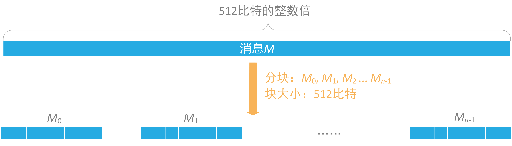
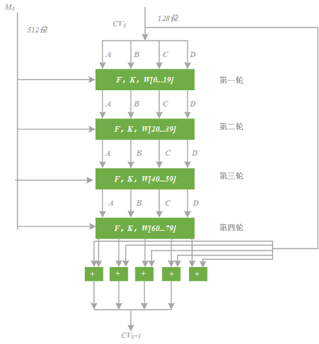

本实验支持自定义明文进行SHA-1 Hash运算，且支持两种方式：PC端Hash和智能卡端Hash。
对于PC端，本实验支持消息长度可变的Hash运算，且可显示Hash过程中关键步骤的中间值；对于智能卡端，本实验支持消息长度在
以下为本实验的重要提示：
下面我们对SHA-1示例卡的APDU指令进行说明，SHA-1示例卡的Command APDU如下：
CLA |
INS |
P1 |
P2 |
Lc/Le |
Data |
功能 |
00 |
41 |
00 |
00 |
Lc |
Lc字节消息 |
SHA-1 Hash |
00 |
C0 |
00 |
00 |
Lc |
读取Hash结果 |
注：上表中的数字均为16进制表示。
Response APDU的SW1、SW2我们定义如下：
SW1 |
SW2 |
状态 |
90 |
00 |
成功 |
61 |
xx |
有 “xx” 字节数据可读取 |
6E |
00 |
CLA错误 |
6D |
00 |
INS错误 |
6B |
00 |
P1或P2错误 |
67 |
00 |
Lc或Le错误 |
注：上表中的数字均为16进制表示。
我们对卡内的指令进行说明，用Message表示待Hash消息，令：
Message=
那么我们要发送的完整APDU指令顺序为：
1）智能卡SHA-1算法Hash
当加密状态正常时，会返回
2）读取Hash值
学员可切换至“Smart Card”页面，尝试与智能卡发送指令以进行学习。此处需要注意，当插入我们配套的读卡器后，右侧交互栏的读卡器列表将有一项值为“ACS ACR1281 1S Dual Reader ICC 0”的元素，选择该项，然后在“Smart Card”页面的“Command （Hex）”文本框内输入命令，并点击 “Send” 按钮，即可发送APDU指令给智能卡。智能卡的返回数据将显示在“Receive （Hex）”文本框内。
SHA-1是一种密码散列函数，美国国家安全局设计，并由美国国家标准技术研究所（NIST）发布为联邦数据处理标准（FIPS）。SHA-1可以生成一个被称为消息摘要的160位（20字节）散列值，散列值通常的呈现形式为40个十六进制数。SHA-1有如下特性：不可以从消息摘要中复原信息；两个不同的消息不会产生同样的消息摘要。
SHA-1算法主要包括
SHA-1算法中的预处理就在消息 $M$ 后面补充需要的信息，使整个消息满足指定的结构。信息的预处理分为两个步骤：附加填充比特和附加长度。
填充是这样进行的：先补第一个比特为1，然后都补0，直到长度满足对512取模后余数是448。以信息 “abc” 为例显示补位的过程。a,b,c对应的ASCII码分别是97,98,99，于是原始信息的二进制编码为：$01100001 01100010 01100011$。
1）补位第一步，首先补一个 “1”： $0110000101100010 01100011 1$，
2）补位第二步,补423个 “0”：$01100001 01100010 01100011 10000000 00000000 \cdots 00000000$。
附加长度值就是将原始数据（第一步填充前的消息）的长度信息补到已经进行了填充操作的消息后面。SHA-1用一个64位的数据来表示原始消息的长度。消息 “abc”，3个字符，占用24个比特。
因此，填充后的消息就变为（16进制格式）：
\begin{multline} \begin{split} &61626380\quad 00000000\quad 00000000\quad 00000000\\ &00000000\quad 00000000\quad 00000000\quad 00000000\\ &00000000\quad 00000000\quad 00000000\quad 00000000\\ &00000000\quad 00000000\quad 00000000\quad 00000018\\ \end{split} \end{multline}经过信息预处理的明文，其长度正好为512位的整数倍，然后按512位的长度进行分组，可以得到一定数量的明文分组，用$M_0$，$M_1$，$\cdots$, $M_{N-1}$表示这些明文分组。

图1 信息分组处理
而对于每个512位的明文分组，SHA-1将其再分成16份更小的明文分组，称为子明文分组。每个子明文分组为32位，用$M[t]$（$t= 0, 1,\cdots,15$）来表示这16个子明文分组。然后需要将这16个子明文分组扩充到80个子明文分组，将其记为$W[t]$（$t= 0, 1,\cdots ,79$），扩充的具体方法如下：
\begin{multline} \begin{split} &W_t=M_t,0\le t\le 15\\ \\ &W_t=(W_{t-3}\oplus W_{t-8}\oplus W_{t-14}\oplus W_{t-16})\lll 1 , 16\le t\le 79\\ \\ \end{split} \end{multline}从而得到80个子明文分组。
初始化缓存就是为链接变量赋初值。SHA-1采用160位的信息摘要，以32位为计算长度，需要5个链接变量,记为$A$、$B$、$C$、$D$、$E$。其初始赋值分别为：
\begin{multline} \begin{split} &A = \mbox{0x67452301}\\ \\ &B = \mbox{0xEFCDAB89}\\ \\ &C = \mbox{0x98BADCFE}\\ \\ &D = \mbox{0x10325476}\\ \\ &E = \mbox{0xC3D2E1F0}\\ \\ \end{split} \end{multline}SHA-1有4轮运算，每一轮包括20个步骤，一共80步，最终产生160位的信息摘要，这160位的摘要存放在5个32位的链接变量中，4轮运算如下图所示：

图2 SHA-1的4轮运算
在SHA-1的4轮运算中，虽然进行的就具体操作函数不同，但逻辑过程却是一致的。首先，定义5个变量，假设为$H_0$、$H_1$、$H_2$、$H_3$、$H_4$，对其分别进行如下操作：
（1）将$A$左移5与$f_t$函数的结果求和，再与对应的子明文分组、$E$以及计算常数求和后的结果赋予$H_0$。
（2）将$A$的值赋予$H_1$。
（3）将$B$左移30位，并赋予$H_2$。
（4）将$C$的值赋予$H_3$。
（5）将$D$的值赋予$H_4$。
这一过程表示如下：
而在4轮80步的计算中使用到的函数和固定常数如下表所示：
轮次 |
步数 |
函数 |
常数 |
1 |
$0 \le t \le 19$ |
$f_t(B,C,D) = (B\& C)|(\verb'~' B \& D)$ |
$K_t=\mbox{0x5A827999}$ |
2 |
$20 \le t \le 39$ |
$f_t(B,C,D)=B\oplus C\oplus D$ |
$K_t=\mbox{0x6ED9EBA1}$ |
3 |
$40 \le t \le 59$ |
$f_t(B,C,D)=(B\&C)|(B\&D)|(C\&D)$ |
$K_t=\mbox{0x8F188CDC}$ |
4 |
$60 \le t \le 79$ |
$f_t(B,C,D)=B\oplus C\oplus D$ |
$K_t=\mbox{0xCA62C1D6}$ |
经过4论80步计算后得到的结果，再与各链接变量的初始值求和，就得到了最终的信息摘要。而对于有多个明文分组的，则将前面所得到的结果作为初始值进行下一明文分组的计算，最终计算全部的明文分组就得到了最终的结果。